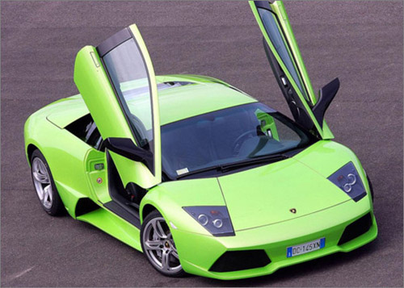

html5jscss前端网实验室
返回文章
Border-radius
border-radius四个方位值
border-radius方位简写方式
不同盒模型下半分比和绝对宽度换算
正方形变圆形
内半径受border宽度影响
border-style转变转变的界线受border-width影响
应用中的特殊情况
不能直接用在图片上

不能直接用在table
border-collapse: collapse;
| Col 1 | Col 2 | Col 3 |
|---|
| 1 | 1 | 2 |
| 3 | 5 | 8 |
| 13 | 21 | 34 |
border-collapse: separate;
| Col 1 | Col 2 | Col 3 |
|---|
| 1 | 1 | 2 |
| 3 | 5 | 8 |
| 13 | 21 | 34 |